本来想转载“台湾的服贸争议”。但是最近几天，咱们天朝发生了两起大规模的环保抗议活动（分别在广东茂名和福建莆田），所以还是先聊天朝吧，毕竟大多数读者都是天朝网民。
本文图片很多，怕有些读者没耐心看到结尾，把总结放到开头。
如今的天朝，几乎处处都有环保灾难。很多环保问题涉及到的土壤污染和水源污染，一两代人都未必能彻底消除（因为有的污染物需要上百年才能彻底降解）。难道你想看着自己的小孩生活在这样的环境中——喝着被污染的水源，呼吸着被污染的空气，最后因为慢性病而短命？
所以，就算不为你自己考虑，也得为你的儿孙们考虑考虑——而上街抗议是最有效的。对于上街的效果，网上有精辟的总结：【大闹大解决，小闹小解决，不闹不解决。】
换句话说：“上街”不一定能解决问题，但是“不上街”问题就肯定不会解决。现在已经有很多民众开始领悟这个道理，并参与到“群体性抗议”中。
另外，网上有很多网友针对“PX 毒性”的话题进行口水战。俺后来又发了一篇《“片面强调 PX 低毒”属于偷换概念——茂名 PX 抗议活动随想》，供大伙儿参考。
图片很多，如果是翻墙访问并且网速不够，请耐心等待图片加载。
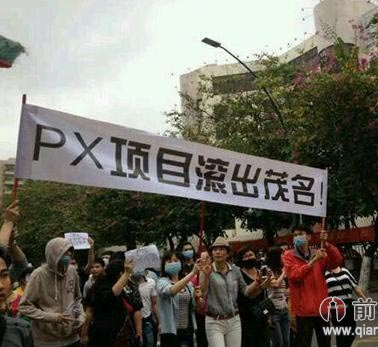

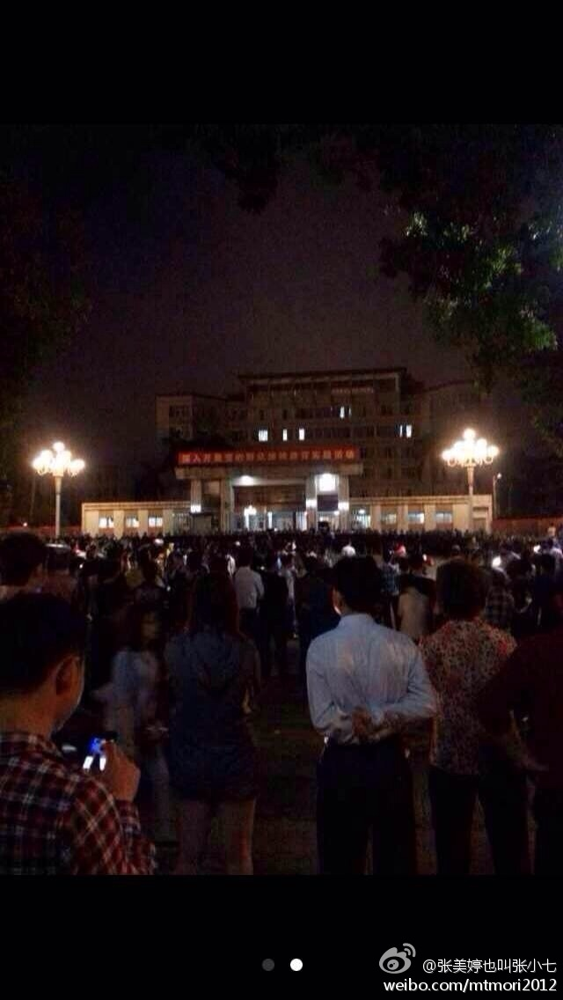
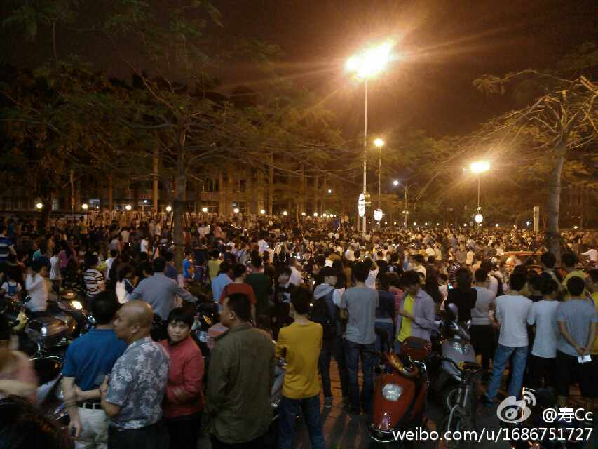
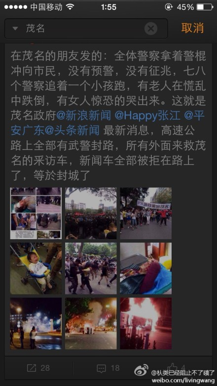
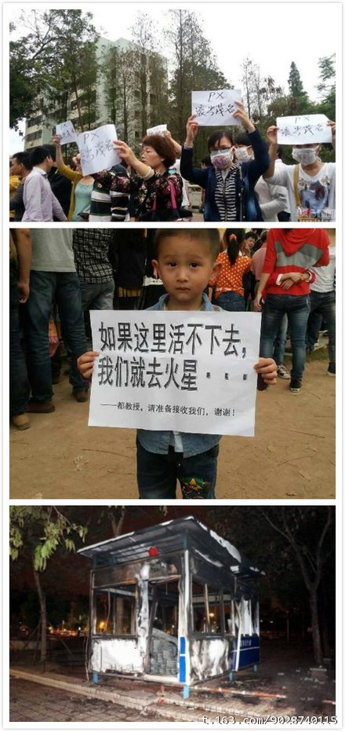
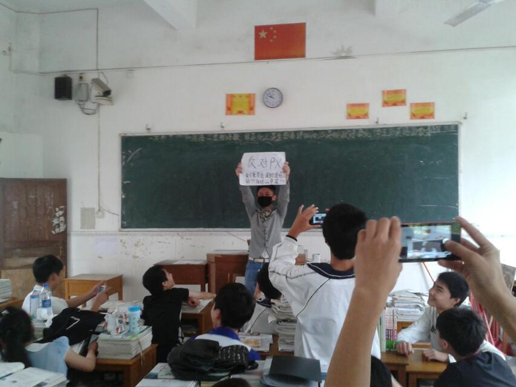
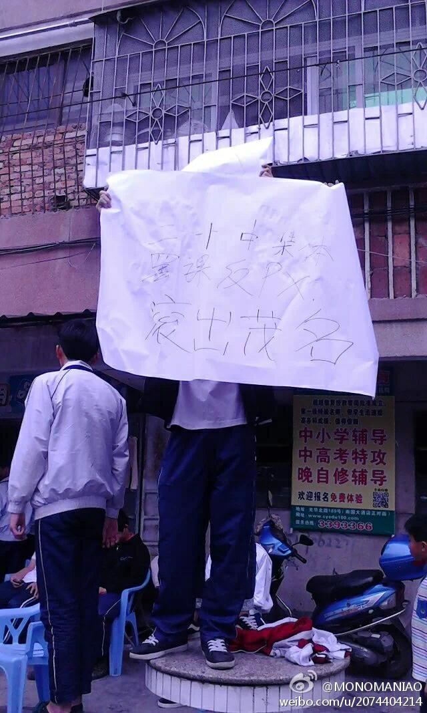
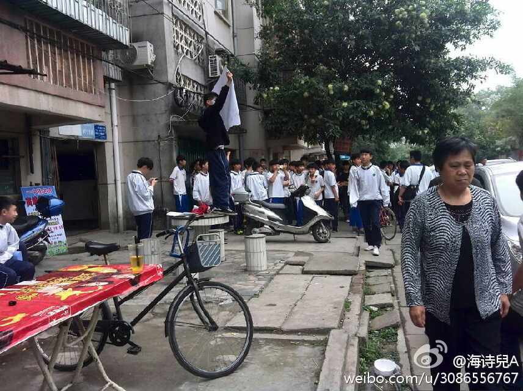
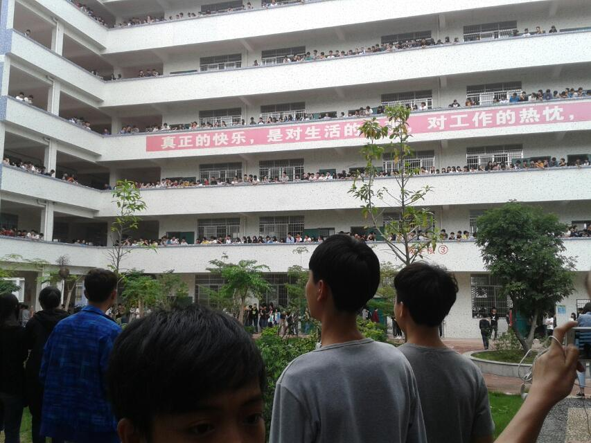
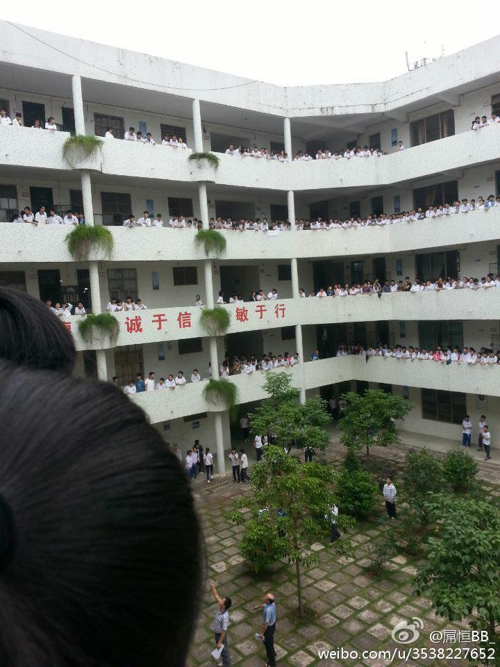
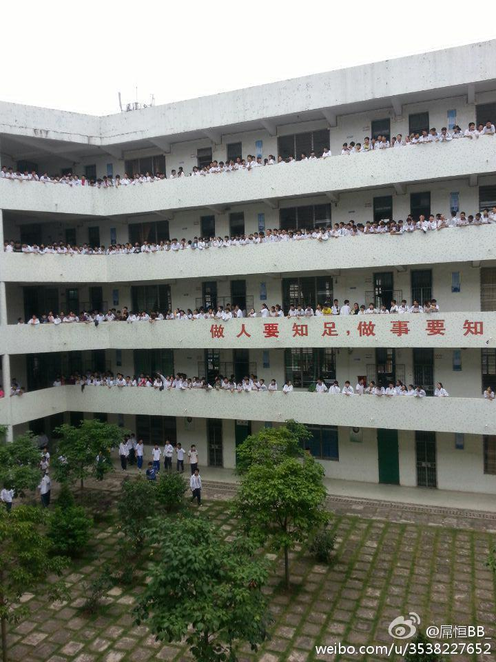
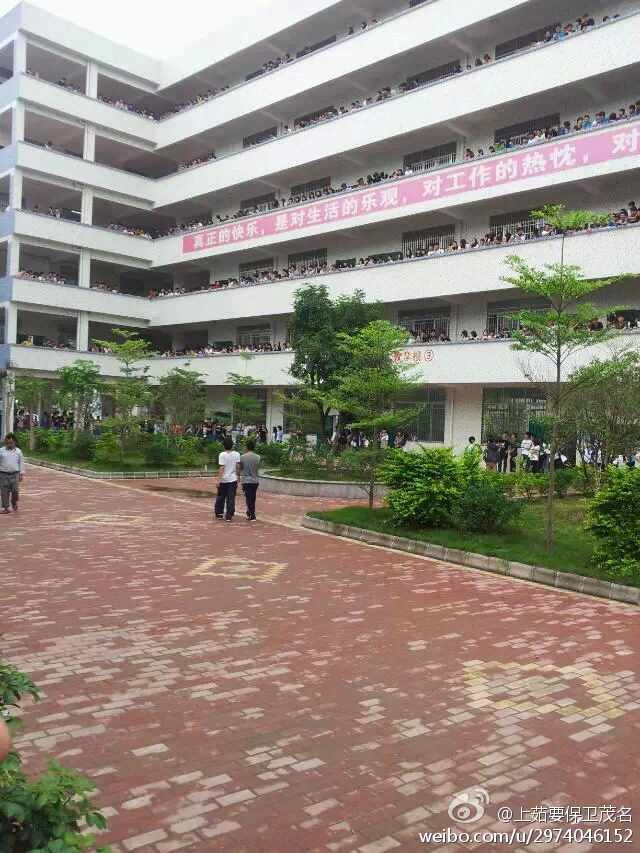

这次茂名的一大创新是：当地的某些企业和学校要求人人过关，强迫每人签署“支持 PX 项目的保证书”。
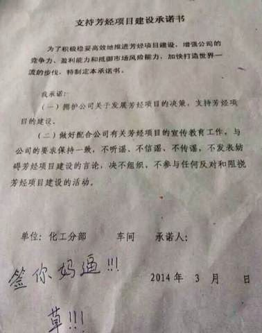
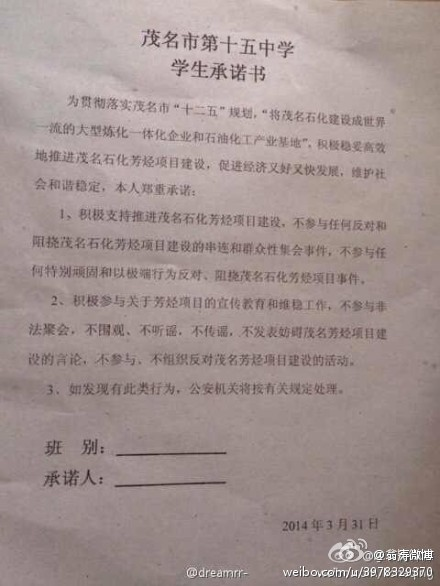
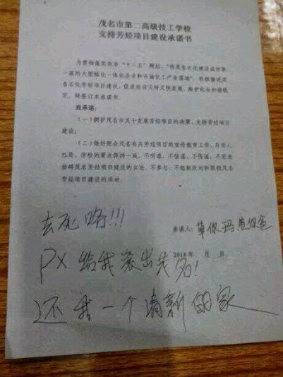
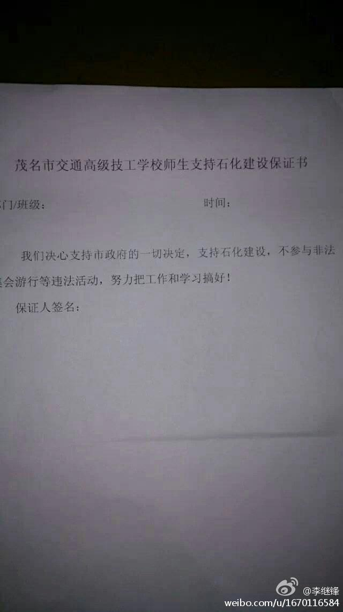
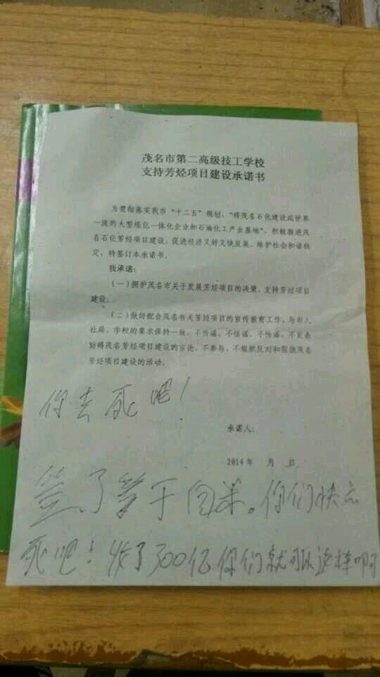
以下两位，男的网名“花满楼”，女的是“观东琴”。

观东琴在警察局
广州，东风中路中山纪念堂，广东省政府旁边，人们走上了街头。
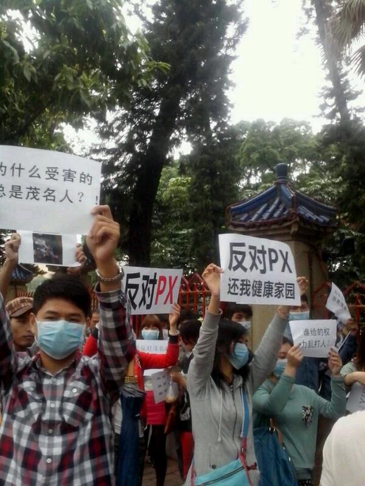
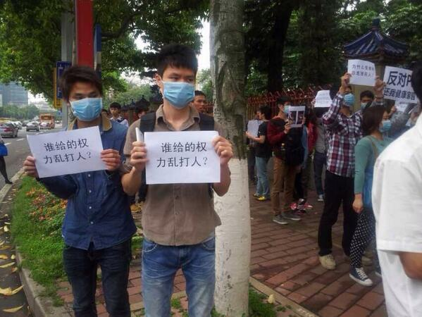
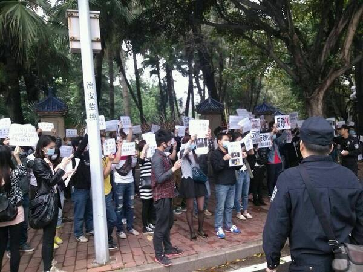
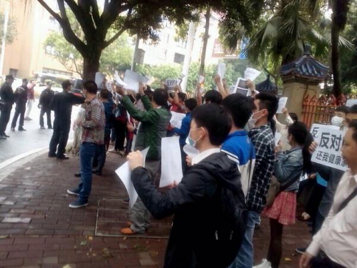
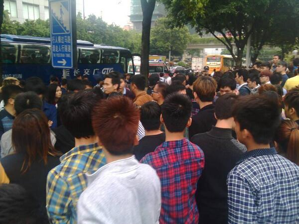
广东衙门担心茂名民众大规模进入广州进行抗议活动。连茂名至广州的客运列车都停运。以下是火车站的通告。
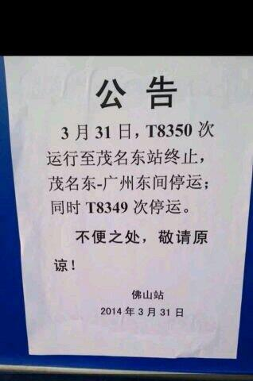
然后茂名的衙门开了一个新闻发布会，结果被参与的记者爆料说，全程都是自编自导。


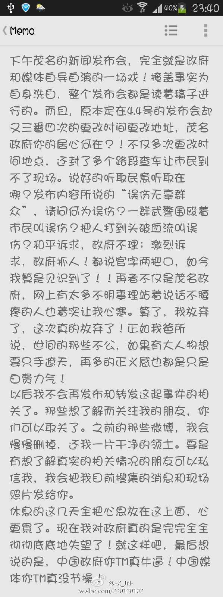
Iam__Fish：
三问茂名市政府！
一：为何有序的游行会遭到过千名警力无端被棍棒相向？
二：我们纳税养的，竟然是一帮打手而且打的却是无辜民众？
三：政府不听从民意，那么我们如此强烈表达出来，为何视若无睹？用暴力阻止？？？？是利益？政绩？
林一民
打你，叫执法；一起打你，叫联合执法。
你跑，叫畏罪潜逃；你不跑，叫妨碍公务。
你防卫，叫抗法；你反抗，叫暴力抗法。
你正当防卫，叫故意伤人；他故意伤人，叫正常执法。
你死，叫自己突发急病；你喊冤，叫社会不稳定因素；
你上访，叫精神病；你上网，叫散布谣言。
生命无须精彩，活着就是奇迹！
有何良策仁波切二世
其实很多问题都出在基层警察“太卖力”、“太投入”。
你们工资不高，油水也就是这儿卡3000那儿卡2000的这种水平。拿多少钱干多少活，万事只求对得起良心就好。
你不会因为踹律师几脚就升官，也不可能抡了反PX群众两棍就涨工资。
何必呢？人家高官的老婆孩子在海外，随时可以走。你们呢？党国垮台的时候你们逃去哪儿？
许达城A-soV：
@崔永元 @讲句良心话 @思想聚焦 @袁裕来律师
茂名市民抗议政府在距市区7公里地建设px装置，双方有肢体接触，大批群众被打伤，全市封锁消息，新闻煤体称领导不发话不敢来，求助无门了～～希望你们帮帮茂名吧
冯师长：
PX对人体有害，对环境有污染，已是众人周知。就因政府拿着百姓的钱，所以在建造PX工厂政策问题上，当地老百姓最有发言权，也有最终的决定权。
如今，却要人民走上街头用生命抵制，政府真是害人不浅。他们却还用暴力制裁百姓的决定权。
可见他们用这不合法的执勤手段，就知道这个政府已丧失人性化与公正化。
莫之许：
网格化维稳之下，如果你不想做职业维权人士，那么，当你偶尔走上街头表达抗议的时候，请戴上口罩。
一来可以避免被骚扰，二来即使最终被定位，也消耗掉大量维稳资源，三来口罩成群，犹如V字面具，足以让统治者胆战心惊。
Vevina-敉儿:
2014年３月３０号 是一个不眠夜．先是进入市委的汽车被推翻，特警持枪出场，先是催泪弹驱散人群，然后一路喷辣椒水，鸣枪驱赶，到目前为止特警已打死两个人，所以的新闻报道没人敢报，所以的消息封锁住，市民们不要再被人利用了，一定要文明抗争，政府就是想造成我们暴动，可怜的茂名人
Meilin囧：
一瞬间，全体警察拿着警棍冲向市民。没有预警，没有征兆，七八个警察追着一个小孩跑，有老人在慌乱中跌倒，有女人惊恐的哭出来。
这就是茂名政府。那一刻，我觉得冲向我们的不是中国人，是侵略者，是洪水猛兽。
茂名警察打人，如此腐败无能的茂名政府…欺压百姓却打手无寸铁的人们
記錄每欣晴：
缘何网上有关茂名人民游行反对“PX项目”的贴子都被删了？茂名媒体都哑了！
30日广东茂名“PX项目”游行，官方使用武力驱赶手无寸铁的民众！人民这样做有错吗？人民只是保护他们的家园而已。
因为中国是法治国家，所以，茂名政府就可以动用暴力机器，关起门来，黑打“暴徒”！
因为茂名政府是人民政府，所以，就可以代表人民，强迫人民支持建设PX项目的伟大决定！
因为担心敌对势力团结起来，所以，实行包围，分而击之，是英明的战术！
因为怕敌对势力歪曲抹黑，不明真相群众上当围观，所以，实行信息封锁是无比正确的！
竹羊羊：
茂名PX抗议，夜间继续升级，矛盾激化，有年轻人砸毁车辆，抗议下午警察使用暴力驱散游行人群。
寿Cc：
希望大家能关注我们茂名，小城市为了尊严，为了自己的人权，为了子孙后代所做出的游行#赶px出去#
网易网友：
【茂名否认PX事件中曾出动坦克】
俺觉得真相是：许多游行的市民都受到了警察的热情接待.......警察还亲切的帮市民做起了身体按摩......对于警察同志的热情帮助，许多市民激动得当场晕倒在地......
fightcensorship：
看到有人转发这样的消息：“所有网络都封掉了，希望中央政府能看到这些消息，出面救救茂名人......”
让人感到不解的是，难道人们还觉得中央政府不知情？一个地方政府如何能调动大批武警？
不禁感到中国人的可悲，无路可走，只有乞求。
爱百合yy：
紧急通知:各单位必须要通知下属各部门、各班组，再由各部门、各班组通知到每一位职工（包括劳务工），要求每位职工和家属不得参加，不得围观，如被拍照或被公司查实，将严格追究责任。
在通知过程中要层层做好登记工作，确保通知到位。特此通知。
[众和公司芳烃项目推进领导工作小组]2014年3月28日17时。
shell909090：
大陆网友：台湾为什么就是不肯和大陆签协议？
台湾网友：你们为什么反对PX？
大陆网友：因为有毒啊！
台湾网友：可是新加坡就很淡定啊！
大陆网友：可是政府在安全方面的记录很差啊，而且经常伙同砖家蒙骗百姓。
台湾网友：你刚刚说什么再说一遍？
一毛不拔大师：
你科普说“PX工厂没污染”，我说“实测结果周边有污染”；
你就说“化工厂都不合格为什么专说PX”，我告诉你“PX也许单位产能释放污染较少但整体产能太大污染总量很高”；
你就又质问说“那就不上任何化工停留在原始社会”，我说“我只是希望国家能严格执行环保法令让民间组织可以监督”；
然后你又开始科普PX工厂没污染。
安替：
昨天和老婆讨论PX。她问：松鼠会不是说PX毒性不高的吗？
我说如果PX厂建在这些辩护者家门口，他们还能站在政府那边大声支持建厂，我才信他们的真诚。
PX厂根本不是毒不毒的科普问题，而是是否经过同意的民主程序问题。
中国连奶粉这种全世界都想不出会有毒性的产品搞出毒性了，那一边为孩子海淘奶粉，一边写化工无毒科普文章，这算什么精神？
假装在西安
茂名的事我不得而知，但青岛、什邡等地的PX项目闹得沸沸扬扬。
一会说这玩意没毒，一会又说危害不大，既然如此为何不建在政府隔壁？
竟有人不要碧莲说日本欧美在市区附近都有PX，我们为什么不能有？
可一样的工业，为什么我们的奶粉有毒？为什么我们呼着雾霾吃着地沟油？
这些都解决不了，就少给我扯PX无毒！不嫌丢人！
江南忆龄V：
#关注茂名事件#
东南边有乙烯厂！西北边有炼油厂！市区就夹在中间！我们实在不再需要PX！
有些人说，茂名有乙烯、炼油厂，污染已经很厉害了，再上个PX项目也不会对茂名造成更严重的影响！
请问你们说的这个是人话吗？他们的意思：你有肝癌、胃癌，那再得个脑癌也没什么大不了！
deng_kai：
从厦门、大连、什邡、启东、宁波，到茂名，环保抗争来自于社区型动员结构，这种高整合型的行动，根本没办法防。
在89之后遏制学生的生态聚合，民间抗争组织出来就灭，也就剩这个能够形成真正的对抗规模。现在是在哪里建厂，哪里就埋地雷，一踩就爆。
何三畏V：
【坐牢工程】
四川彭州石化，几年前，反对的坐牢（编程随想注：也就是谭作人），而今刚从牢里出来，还在管制期间；当初置环评于不顾硬要上马的官员们，如今大都在牢里了。
linyujing：
你们都错了，我觉得PX才是真正的海外反华势力！
已经在中国制造了这么多起群体事件，启蒙了一波又一波城市居民，屡次被打压，还百折不回的在中国不同地区顽强的进行革命普及事业。
boy1573：
PX成为敏感词了，在官方媒体上摇身一变成了“芳烃”，玩这些文字游戏有意思吗？
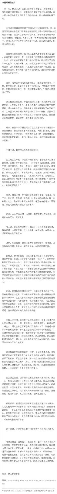
2014年4月1日0点08分，新浪微博@头条新闻v发出微博，以【茂名回应芳烃项目：如绝大多数人反对 政府不会违背民意】为题，发布官方回应。
截止4月1日1点29分，收获了1693条质疑。以下是网友质疑的部分摘录：
2013.3
茂名国土局一所长余某昆
落马原因：挪用公款
发放补贴共80745元，其中包括年终奖、加班费、全勤、工龄、非税提成、收拾工具6项。
此外其邀请下属9名员工共携带6名家属，在2012年10月2日至6日期间，到福州、厦门等地旅游花费掉27148元。
2013.9
茂名原副市长李观来
落马原因：受贿、行贿
在担任茂名市政府副市长期间，利用职务之便，收受茂名市茂南财富置业开发有限公司等4家房地产公司相关人员贿送的财物共计人民币38万元、港币60万元。还被控向两任茂名市委书记周镇宏和罗荫国行贿。
2013.11
茂名市政府原市长助理雷挺
落马原因：行贿、受贿、滥用职权
为谋取时任茂名市长罗荫国的关照，曾向其行贿一套住房，后终获提拔为副厅级官员。
此外，他还在审批房地产项目过程中，滥用职权、收受贿赂致国家损失逾亿元。
2014.1
原茂名市公路局党组成员、副调研员尤军南
落马原因：受贿
涉嫌跑官送钱求关照，并收受超100万元“红包”、回扣、补贴，违反计生政策生了四胎，并与情人长期保持不正当关系。[详细]
2014.2
茂名信宜原市委常委张肖平
落马原因：受贿、滥用职权
在担任信宜市扶曹、扶云、大合水库电站改制工作组长期间，利用职务便利，帮助同学、老乡岑兆荣等人，以较小代价，成功获得扶曹、扶云、大合水库电站的产权，致使公共财产、国家利益遭受了重大损失。
岑兆荣为兑现与张肖平的约定，在张肖平的要求下，分别三次让岑兆荣帮助他支付茂名市区亨利华府的购房款，共计现金人民币210万元。
2014.3
茂名国土局原副局长吴华强
落马原因：受贿
在担任茂名市国土资源局执法监察大队长和副局长期间，收受非法矿主贿赂，为非法矿主充当“保护伞”。
收受他人钱财和公司干股折合88.28万元，为他人非法采矿和减少罚款给予关照和帮助；收受矿主和其他人红包合计23.1万元。
2014.3
茂名茂南区党委书记温志雄
落马原因：严重违纪
2014.3
茂名原政协主席冯立梅
落马原因：严重违纪
张雪忠：
在昆明暴力事件发生后，包括多名央视主持人在内知名人士，对那些无疑会受到法律惩罚的行凶者，进行了声嘶力竭的谴责。
但在茂名当局对平民百姓施暴时，这些人却完全缄口不言。
这使我明白了一个道理：那些善于在无需勇气时义愤填膺，在需要勇气时却噤若寒蝉的人，不但是懦弱的，而且是伪善的。
犀利哥：
昆明暴徒砍人，你们都觉着恐怖？茂名军警打人，你们没声了？
是因为不恐怖？还是恐怖得不敢出声了？
昆明几百人躲在饭馆不敢面对暴徒，你们说中国人没血性；茂名有血性的上街了，你们又没声了？被谁吓到了？
自己先拿出发声的勇气声援一下好吗 ？
北京杨博：
【被毁掉的一代】
文章同学在31日0点微博公开回应2小时互动量破87万，早9点突破200万。马伊琍微博回应9小时互动量174万。
中国青年对于明星私生话的关注远远超过了对于法治、反腐、环境污染、国家及社会暴力、政治民主……
此时，台湾青年正在为民主抗争……
姚晨的粉丝6000多万，文章的粉丝也达3000多万。而真正为民请命的博主粉丝寥寥可数，民斗不如戏子！
姚笛文章一偷情，全国百姓都“奋不顾身”地扑上去了！平度烧死护地农民惨案、建三江律师被虐案，茂名公民诉求案，全国的百姓假装没看到...
证明这个民族已经没有希望了。
一个艺人的内裤掉了，引来上百万人的转发围观，而一块土地在燃烧，人们却麻木不仁，难道同胞的头颅比不上艺人的破内裤？
明星出轨，天下哗然！百姓被杀，几人关注？此等民族，谈何崛起！
左春和：
有那么一些人，对高悬在头顶的屠刀视而不见，或者选择遗忘，而钟情于钻到他人的裤裆里寻找道德自足。
我说这些人不是有窥阴癖，便是落魄的阴虱。作为个人是一种病态，如果成为一种文化并占据主流，这个民族真是无可救药了。
hnjhj：
瓮安石首启东，我们看到，某些人在某些事情上达成了共识，他们强力维稳；
茉莉花新公民，我们看到，某些人在大批事情上达成了共识，他们坚决剿灭；
各地的PX事件，我们看到，大批人在某些事情上达成了共识，他们感到恐慌；
将来有朝一日，我们将会看到，大批人在大批事情上达成共识，他们末日临头。
格瓦拉：
【院内故事】
爷爷问孙子：将来你是要管理院子的，如果院内有突发事件怎么处理？
孙子说：封锁消息，放狗！
爷爷说：放狗是必要的，但封锁消息却错了，确切地说是扰乱消息。
孙子追问：如何扰乱？
爷爷说：故意放出假消息，叫他们传，然后拿出证据辟谣，辟谣时连真消息一起辟了……
孙子赞叹：还是爷爷高明！
曾荣康：
你的围观也许没有意义，但是多了一个看到罪恶的人；
你的转发也许没有力量，但是多了一个传播真相的人；
你的声音也许非常微弱，但是多了一个敢于呐喊的人；
你的行为也许面临危险，但是多了一个坚持真理的人。
赵德峰先生V：
【微博抵制明星不作为运动】
所谓的中国明星，他们占据着大量的听众资源，他们不关心灾难，不关心民众诉求，在民众最需要他们发声时，他们却集体失声。他们从不关心国民灾难，他们没有香港明星的骨气，他们是一群卖身寻腥者。呼吁微博界抵制明星，取消收听明星运动，从我做起！ 一起转发！
厚黑学并不是多么高深复杂的东西，只要大脑没有问题，谁都能掌握。人人都掌握了，人人都没有优势，最后导致全民交易成本最大化，并且出现了目前这种互相下毒的局面。卖奶粉的绝不喝奶粉，卖猪肉的绝不吃猪肉，卖蔬菜的只吃自家单独生产的无毒蔬菜。谁都觉得自己最聪明，自己占了便宜，其实大家都是厚黑学的受害者。
金融界人贩子：
王小波老师曾写到过：当年他饿得受不了了，就吃掉了香橡皮和铅笔，津津有味。他在吃这些只有白蚁才会吃的东西时，窗外高音喇叭里正在慷慨激昂地播出全国各地亩产又创了多少新高。
两下里的对比是如此强烈，以至于从此落下病根——但凡是官方在广播里大声咋呼的，他都认为是假的。
事实证明，他还真没说错。
徐昕：
世界上最遥远的距离，莫过于你在看文章，我在看茂名建三江。
jameschownb：
五个警察交流经验。
东莞警察：我们扫荡娱乐场所，那叫一个攻城拔寨！
平度警察：我们夜运死者尸体，那叫一个气势磅礴！
建三江警察：我们拘押非法律师，那叫一个排山倒海！
茂名警察：我们打压反动群众，那叫一个所向披靡！
网络警察：都别他妈吹牛x了，没我帮你们删帖，你们早都死翘翘了！
俺博客上，和本文相关的帖子（需翻墙）：
谈谈环保问题的根源和解决之道
“片面强调 PX 低毒”属于偷换概念——广东茂名 PX 抗议活动随想
每周转载：关于启东的环保抗议（照片多张、视频若干）
会叫的孩子有奶吃——启东人民在行动，上海人民怎么办？
每周转载：关于什邡的环保抗议（网文3篇、照片若干、视频若干）
★写在前面的总结
本文图片很多，怕有些读者没耐心看到结尾，把总结放到开头。
如今的天朝，几乎处处都有环保灾难。很多环保问题涉及到的土壤污染和水源污染，一两代人都未必能彻底消除（因为有的污染物需要上百年才能彻底降解）。难道你想看着自己的小孩生活在这样的环境中——喝着被污染的水源，呼吸着被污染的空气，最后因为慢性病而短命？
所以，就算不为你自己考虑，也得为你的儿孙们考虑考虑——而上街抗议是最有效的。对于上街的效果，网上有精辟的总结：【大闹大解决，小闹小解决，不闹不解决。】
换句话说：“上街”不一定能解决问题，但是“不上街”问题就肯定不会解决。现在已经有很多民众开始领悟这个道理，并参与到“群体性抗议”中。
另外，网上有很多网友针对“PX 毒性”的话题进行口水战。俺后来又发了一篇《“片面强调 PX 低毒”属于偷换概念——茂名 PX 抗议活动随想》，供大伙儿参考。
★茂名图集
图片很多，如果是翻墙访问并且网速不够，请耐心等待图片加载。
◇民众示威游行、衙门暴力镇压
◇当地某些学校罢课、部分学生参与抗议
◇茂名保证书
这次茂名的一大创新是：当地的某些企业和学校要求人人过关，强迫每人签署“支持 PX 项目的保证书”。
◇茂名民众在广州抗议，3男6女被拘
以下两位，男的网名“花满楼”，女的是“观东琴”。
观东琴在警察局
◇广州当地的声援
广州，东风中路中山纪念堂，广东省政府旁边，人们走上了街头。
广东衙门担心茂名民众大规模进入广州进行抗议活动。连茂名至广州的客运列车都停运。以下是火车站的通告。
◇茂名衙门自编自导的新闻发布会
然后茂名的衙门开了一个新闻发布会，结果被参与的记者爆料说，全程都是自编自导。
★网友评论
◇关于“示威游行”和“暴力镇压”
Iam__Fish：
三问茂名市政府！
一：为何有序的游行会遭到过千名警力无端被棍棒相向？
二：我们纳税养的，竟然是一帮打手而且打的却是无辜民众？
三：政府不听从民意，那么我们如此强烈表达出来，为何视若无睹？用暴力阻止？？？？是利益？政绩？
林一民
打你，叫执法；一起打你，叫联合执法。
你跑，叫畏罪潜逃；你不跑，叫妨碍公务。
你防卫，叫抗法；你反抗，叫暴力抗法。
你正当防卫，叫故意伤人；他故意伤人，叫正常执法。
你死，叫自己突发急病；你喊冤，叫社会不稳定因素；
你上访，叫精神病；你上网，叫散布谣言。
生命无须精彩，活着就是奇迹！
有何良策仁波切二世
其实很多问题都出在基层警察“太卖力”、“太投入”。
你们工资不高，油水也就是这儿卡3000那儿卡2000的这种水平。拿多少钱干多少活，万事只求对得起良心就好。
你不会因为踹律师几脚就升官，也不可能抡了反PX群众两棍就涨工资。
何必呢？人家高官的老婆孩子在海外，随时可以走。你们呢？党国垮台的时候你们逃去哪儿？
许达城A-soV：
@崔永元 @讲句良心话 @思想聚焦 @袁裕来律师
茂名市民抗议政府在距市区7公里地建设px装置，双方有肢体接触，大批群众被打伤，全市封锁消息，新闻煤体称领导不发话不敢来，求助无门了～～希望你们帮帮茂名吧
冯师长：
PX对人体有害，对环境有污染，已是众人周知。就因政府拿着百姓的钱，所以在建造PX工厂政策问题上，当地老百姓最有发言权，也有最终的决定权。
如今，却要人民走上街头用生命抵制，政府真是害人不浅。他们却还用暴力制裁百姓的决定权。
可见他们用这不合法的执勤手段，就知道这个政府已丧失人性化与公正化。
莫之许：
网格化维稳之下，如果你不想做职业维权人士，那么，当你偶尔走上街头表达抗议的时候，请戴上口罩。
一来可以避免被骚扰，二来即使最终被定位，也消耗掉大量维稳资源，三来口罩成群，犹如V字面具，足以让统治者胆战心惊。
Vevina-敉儿:
2014年３月３０号 是一个不眠夜．先是进入市委的汽车被推翻，特警持枪出场，先是催泪弹驱散人群，然后一路喷辣椒水，鸣枪驱赶，到目前为止特警已打死两个人，所以的新闻报道没人敢报，所以的消息封锁住，市民们不要再被人利用了，一定要文明抗争，政府就是想造成我们暴动，可怜的茂名人
Meilin囧：
一瞬间，全体警察拿着警棍冲向市民。没有预警，没有征兆，七八个警察追着一个小孩跑，有老人在慌乱中跌倒，有女人惊恐的哭出来。
这就是茂名政府。那一刻，我觉得冲向我们的不是中国人，是侵略者，是洪水猛兽。
茂名警察打人，如此腐败无能的茂名政府…欺压百姓却打手无寸铁的人们
記錄每欣晴：
缘何网上有关茂名人民游行反对“PX项目”的贴子都被删了？茂名媒体都哑了！
30日广东茂名“PX项目”游行，官方使用武力驱赶手无寸铁的民众！人民这样做有错吗？人民只是保护他们的家园而已。
因为中国是法治国家，所以，茂名政府就可以动用暴力机器，关起门来，黑打“暴徒”！
因为茂名政府是人民政府，所以，就可以代表人民，强迫人民支持建设PX项目的伟大决定！
因为担心敌对势力团结起来，所以，实行包围，分而击之，是英明的战术！
因为怕敌对势力歪曲抹黑，不明真相群众上当围观，所以，实行信息封锁是无比正确的！
竹羊羊：
茂名PX抗议，夜间继续升级，矛盾激化，有年轻人砸毁车辆，抗议下午警察使用暴力驱散游行人群。
寿Cc：
希望大家能关注我们茂名，小城市为了尊严，为了自己的人权，为了子孙后代所做出的游行#赶px出去#
网易网友：
【茂名否认PX事件中曾出动坦克】
俺觉得真相是：许多游行的市民都受到了警察的热情接待.......警察还亲切的帮市民做起了身体按摩......对于警察同志的热情帮助，许多市民激动得当场晕倒在地......
fightcensorship：
看到有人转发这样的消息：“所有网络都封掉了，希望中央政府能看到这些消息，出面救救茂名人......”
让人感到不解的是，难道人们还觉得中央政府不知情？一个地方政府如何能调动大批武警？
不禁感到中国人的可悲，无路可走，只有乞求。
爱百合yy：
紧急通知:各单位必须要通知下属各部门、各班组，再由各部门、各班组通知到每一位职工（包括劳务工），要求每位职工和家属不得参加，不得围观，如被拍照或被公司查实，将严格追究责任。
在通知过程中要层层做好登记工作，确保通知到位。特此通知。
[众和公司芳烃项目推进领导工作小组]2014年3月28日17时。
◇关于“PX”和“污染”
shell909090：
大陆网友：台湾为什么就是不肯和大陆签协议？
台湾网友：你们为什么反对PX？
大陆网友：因为有毒啊！
台湾网友：可是新加坡就很淡定啊！
大陆网友：可是政府在安全方面的记录很差啊，而且经常伙同砖家蒙骗百姓。
台湾网友：你刚刚说什么再说一遍？
一毛不拔大师：
你科普说“PX工厂没污染”，我说“实测结果周边有污染”；
你就说“化工厂都不合格为什么专说PX”，我告诉你“PX也许单位产能释放污染较少但整体产能太大污染总量很高”；
你就又质问说“那就不上任何化工停留在原始社会”，我说“我只是希望国家能严格执行环保法令让民间组织可以监督”；
然后你又开始科普PX工厂没污染。
安替：
昨天和老婆讨论PX。她问：松鼠会不是说PX毒性不高的吗？
我说如果PX厂建在这些辩护者家门口，他们还能站在政府那边大声支持建厂，我才信他们的真诚。
PX厂根本不是毒不毒的科普问题，而是是否经过同意的民主程序问题。
中国连奶粉这种全世界都想不出会有毒性的产品搞出毒性了，那一边为孩子海淘奶粉，一边写化工无毒科普文章，这算什么精神？
假装在西安
茂名的事我不得而知，但青岛、什邡等地的PX项目闹得沸沸扬扬。
一会说这玩意没毒，一会又说危害不大，既然如此为何不建在政府隔壁？
竟有人不要碧莲说日本欧美在市区附近都有PX，我们为什么不能有？
可一样的工业，为什么我们的奶粉有毒？为什么我们呼着雾霾吃着地沟油？
这些都解决不了，就少给我扯PX无毒！不嫌丢人！
江南忆龄V：
#关注茂名事件#
东南边有乙烯厂！西北边有炼油厂！市区就夹在中间！我们实在不再需要PX！
有些人说，茂名有乙烯、炼油厂，污染已经很厉害了，再上个PX项目也不会对茂名造成更严重的影响！
请问你们说的这个是人话吗？他们的意思：你有肝癌、胃癌，那再得个脑癌也没什么大不了！
deng_kai：
从厦门、大连、什邡、启东、宁波，到茂名，环保抗争来自于社区型动员结构，这种高整合型的行动，根本没办法防。
在89之后遏制学生的生态聚合，民间抗争组织出来就灭，也就剩这个能够形成真正的对抗规模。现在是在哪里建厂，哪里就埋地雷，一踩就爆。
何三畏V：
【坐牢工程】
四川彭州石化，几年前，反对的坐牢（编程随想注：也就是谭作人），而今刚从牢里出来，还在管制期间；当初置环评于不顾硬要上马的官员们，如今大都在牢里了。
linyujing：
你们都错了，我觉得PX才是真正的海外反华势力！
已经在中国制造了这么多起群体事件，启蒙了一波又一波城市居民，屡次被打压，还百折不回的在中国不同地区顽强的进行革命普及事业。
boy1573：
PX成为敏感词了，在官方媒体上摇身一变成了“芳烃”，玩这些文字游戏有意思吗？
◇当地衙门回应“茂名”px事件，一个半小时遭过千条质疑
2014年4月1日0点08分，新浪微博@头条新闻v发出微博，以【茂名回应芳烃项目：如绝大多数人反对 政府不会违背民意】为题，发布官方回应。
截止4月1日1点29分，收获了1693条质疑。以下是网友质疑的部分摘录：
佳佳YlNG：
真的假的啊？还打算听取市民的意见？这是我听过最假的话了！
不是已经动工了么？不是要求所有的国营单位职工全部要填写喜欢px工程的协议不然下岗么？不是要求所有的学生家长都必须填写喜欢px工程的协议不然要求退学么？不是所有乙烯、所有石化的员工如果在现场附近二公里内给人拍到照片都立马辞退么？
猫An--摩羯儿：
事情已经遮掩不了了，他们无法再只手遮天了，所以同胞们，请理性表达意见吧！
不过@头条新闻，为什么只公布群众翻车的照片，不公布群众挨打的照片？为何只说群众闹事烧车？为何不说烧车的原因是因为警察打死了群众？
渣亮-纯情小型机：
绝大部分是多少？百分之40，还是百分之98？如果百分之97的人反对，仍然达不到政府的百分之98的标准呢？请把标准量化，另外，暴力镇压是什么回事？
渔王还想继续当渔王：
听你妈勒逼，嘴里出屁话都他妈带屎渣子，拿警察听？拿警棍听？拿催泪弹听？拿你们他妈手中滥用的权利去采取暴力听？啊？
莫默向上：
什么时候在什么地点通过什么方式听取？绝大多数怎么定义？是哪些人呢？ (今天 00:20)
金娣娣---DaiDai：
说的那么好听、人是你鬼是你、能信吗、如果会就没有这样事发生了、那那些逝去的英雄有算什么、狗日 。
Alan流浪鱼：
请你报道点真实的东西出来，好么？别闹了，不做作就不会死！
幽壹
近年频发的“PX、焚烧垃圾”等公共事件，与其责怪民众“无知、受挑唆、暴躁和避邻心理”，不如说地方政府太傲慢，依然在沿用老一套官僚手段施政，完全漠视当地民众的知情权、决策权和切身利益。
另一方面，也折射出政府、专家和官媒公信力严重缺失，已经到了“说什么”和“怎么说”民众都不相信的境地。
Charming_yan爆发小宇宙：
除了支持民意，那么无辜伤害百姓的民警如何处置？[鄙视][鄙视][鄙视][鄙视][鄙视]
居然残害手无寸铁的无辜百姓，这个新闻比什么文什么章出轨有价值多了，却被大多数媒体淹没，可怜的民主国家
xianghua-卢：
请报道下到底封城，出动大批武警镇压到底是有这回事的吗！！！？新闻欠一个交待，难道真是不敢报？
安崇民：
唉，早干吗去了？！基本功必须做在前头，某领导说“对人民好点”，觉得不仅仅是项目上与否，而是从根本上尊重民众、而是有耐心负责任地做好群众工作；此项目究竟是否适合建在当地？是否真能做到最大化防控污染、而真能造福当地？弄明白了？！过往做得如何？现在咋改？芳烃这里那里都不行？等挨宰？！
江南烟雨的没办法：
他妈的那政府要学校，公司全部签订同意书，什么做法？狗溅，媒体说话都是为政府说，人民发生什么事？
被怎么对待，游行的原委是什么？你们敢说吗
每日微视：
@头条新闻
你还敢报道这新闻啊？？你没报道暴力镇压，看来他们不敢封你口，你要是报道暴力镇压，某某某马上把你嘴给封了，你信不
混沌言道长：
回复@红黑-小狮子Leo:
你们以为茂名群体都了解px？答案肯定是不了解的！他们游行目的只是想要让更多人一起反对。
但现在问题不在于px项目对不对，而是现在事件已经衔接到暴力！死亡！！刚已证实死亡两名！
暴力事件一开始是有几个傻逼向武警砸东西，然后不理智的武警就实行了暴力，之后就完全变了质，请问是这样处理事情？
一邑：
回复@火山石烤鱿鱼:
你就这么了解？你就秀什么。你了解茂名吗？你知道茂名的空气污染有多严重吗？
茂名太不需要这个项目了，这么好，还是申请到你家乡那边去吧!
大肚家族：
回复@白玉京_:
先不说有没有毒，政府处理手法就是不合理，已经有人员伤亡，镇压，闭城，几十个警察打一个，真真实实的图片，群众倒地，警察持枪
夏佐的晴天：
回复@kim蹦米:
昨天就已经开始了，昨天上午已经bao li执法流血了，死伤都有，但官方说没有死亡。
持续到晚上开始催泪弹各种戒严，今天全城戒严，高速路都封锁了。
这次比之前昆明宁波厦门的消息封锁都更严重，大概是有经验了……大V一转发就被删……
◇起底茂名当地的贪官
2013.3
茂名国土局一所长余某昆
落马原因：挪用公款
发放补贴共80745元，其中包括年终奖、加班费、全勤、工龄、非税提成、收拾工具6项。
此外其邀请下属9名员工共携带6名家属，在2012年10月2日至6日期间，到福州、厦门等地旅游花费掉27148元。
2013.9
茂名原副市长李观来
落马原因：受贿、行贿
在担任茂名市政府副市长期间，利用职务之便，收受茂名市茂南财富置业开发有限公司等4家房地产公司相关人员贿送的财物共计人民币38万元、港币60万元。还被控向两任茂名市委书记周镇宏和罗荫国行贿。
2013.11
茂名市政府原市长助理雷挺
落马原因：行贿、受贿、滥用职权
为谋取时任茂名市长罗荫国的关照，曾向其行贿一套住房，后终获提拔为副厅级官员。
此外，他还在审批房地产项目过程中，滥用职权、收受贿赂致国家损失逾亿元。
2014.1
原茂名市公路局党组成员、副调研员尤军南
落马原因：受贿
涉嫌跑官送钱求关照，并收受超100万元“红包”、回扣、补贴，违反计生政策生了四胎，并与情人长期保持不正当关系。[详细]
2014.2
茂名信宜原市委常委张肖平
落马原因：受贿、滥用职权
在担任信宜市扶曹、扶云、大合水库电站改制工作组长期间，利用职务便利，帮助同学、老乡岑兆荣等人，以较小代价，成功获得扶曹、扶云、大合水库电站的产权，致使公共财产、国家利益遭受了重大损失。
岑兆荣为兑现与张肖平的约定，在张肖平的要求下，分别三次让岑兆荣帮助他支付茂名市区亨利华府的购房款，共计现金人民币210万元。
2014.3
茂名国土局原副局长吴华强
落马原因：受贿
在担任茂名市国土资源局执法监察大队长和副局长期间，收受非法矿主贿赂，为非法矿主充当“保护伞”。
收受他人钱财和公司干股折合88.28万元，为他人非法采矿和减少罚款给予关照和帮助；收受矿主和其他人红包合计23.1万元。
2014.3
茂名茂南区党委书记温志雄
落马原因：严重违纪
2014.3
茂名原政协主席冯立梅
落马原因：严重违纪
◇茂名 VS 昆明
张雪忠：
在昆明暴力事件发生后，包括多名央视主持人在内知名人士，对那些无疑会受到法律惩罚的行凶者，进行了声嘶力竭的谴责。
但在茂名当局对平民百姓施暴时，这些人却完全缄口不言。
这使我明白了一个道理：那些善于在无需勇气时义愤填膺，在需要勇气时却噤若寒蝉的人，不但是懦弱的，而且是伪善的。
犀利哥：
昆明暴徒砍人，你们都觉着恐怖？茂名军警打人，你们没声了？
是因为不恐怖？还是恐怖得不敢出声了？
昆明几百人躲在饭馆不敢面对暴徒，你们说中国人没血性；茂名有血性的上街了，你们又没声了？被谁吓到了？
自己先拿出发声的勇气声援一下好吗 ？
◇“PX 抗议” VS “文章出轨”
北京杨博：
【被毁掉的一代】
文章同学在31日0点微博公开回应2小时互动量破87万，早9点突破200万。马伊琍微博回应9小时互动量174万。
中国青年对于明星私生话的关注远远超过了对于法治、反腐、环境污染、国家及社会暴力、政治民主……
此时，台湾青年正在为民主抗争……
姚晨的粉丝6000多万，文章的粉丝也达3000多万。而真正为民请命的博主粉丝寥寥可数，民斗不如戏子！
姚笛文章一偷情，全国百姓都“奋不顾身”地扑上去了！平度烧死护地农民惨案、建三江律师被虐案，茂名公民诉求案，全国的百姓假装没看到...
证明这个民族已经没有希望了。
一个艺人的内裤掉了，引来上百万人的转发围观，而一块土地在燃烧，人们却麻木不仁，难道同胞的头颅比不上艺人的破内裤？
明星出轨，天下哗然！百姓被杀，几人关注？此等民族，谈何崛起！
左春和：
有那么一些人，对高悬在头顶的屠刀视而不见，或者选择遗忘，而钟情于钻到他人的裤裆里寻找道德自足。
我说这些人不是有窥阴癖，便是落魄的阴虱。作为个人是一种病态，如果成为一种文化并占据主流，这个民族真是无可救药了。
◇其它评论
hnjhj：
瓮安石首启东，我们看到，某些人在某些事情上达成了共识，他们强力维稳；
茉莉花新公民，我们看到，某些人在大批事情上达成了共识，他们坚决剿灭；
各地的PX事件，我们看到，大批人在某些事情上达成了共识，他们感到恐慌；
将来有朝一日，我们将会看到，大批人在大批事情上达成共识，他们末日临头。
格瓦拉：
【院内故事】
爷爷问孙子：将来你是要管理院子的，如果院内有突发事件怎么处理？
孙子说：封锁消息，放狗！
爷爷说：放狗是必要的，但封锁消息却错了，确切地说是扰乱消息。
孙子追问：如何扰乱？
爷爷说：故意放出假消息，叫他们传，然后拿出证据辟谣，辟谣时连真消息一起辟了……
孙子赞叹：还是爷爷高明！
曾荣康：
你的围观也许没有意义，但是多了一个看到罪恶的人；
你的转发也许没有力量，但是多了一个传播真相的人；
你的声音也许非常微弱，但是多了一个敢于呐喊的人；
你的行为也许面临危险，但是多了一个坚持真理的人。
赵德峰先生V：
【微博抵制明星不作为运动】
所谓的中国明星，他们占据着大量的听众资源，他们不关心灾难，不关心民众诉求，在民众最需要他们发声时，他们却集体失声。他们从不关心国民灾难，他们没有香港明星的骨气，他们是一群卖身寻腥者。呼吁微博界抵制明星，取消收听明星运动，从我做起！ 一起转发！
厚黑学并不是多么高深复杂的东西，只要大脑没有问题，谁都能掌握。人人都掌握了，人人都没有优势，最后导致全民交易成本最大化，并且出现了目前这种互相下毒的局面。卖奶粉的绝不喝奶粉，卖猪肉的绝不吃猪肉，卖蔬菜的只吃自家单独生产的无毒蔬菜。谁都觉得自己最聪明，自己占了便宜，其实大家都是厚黑学的受害者。
金融界人贩子：
王小波老师曾写到过：当年他饿得受不了了，就吃掉了香橡皮和铅笔，津津有味。他在吃这些只有白蚁才会吃的东西时，窗外高音喇叭里正在慷慨激昂地播出全国各地亩产又创了多少新高。
两下里的对比是如此强烈，以至于从此落下病根——但凡是官方在广播里大声咋呼的，他都认为是假的。
事实证明，他还真没说错。
徐昕：
世界上最遥远的距离，莫过于你在看文章，我在看茂名建三江。
jameschownb：
五个警察交流经验。
东莞警察：我们扫荡娱乐场所，那叫一个攻城拔寨！
平度警察：我们夜运死者尸体，那叫一个气势磅礴！
建三江警察：我们拘押非法律师，那叫一个排山倒海！
茂名警察：我们打压反动群众，那叫一个所向披靡！
网络警察：都别他妈吹牛x了，没我帮你们删帖，你们早都死翘翘了！
俺博客上，和本文相关的帖子（需翻墙）：
谈谈环保问题的根源和解决之道
“片面强调 PX 低毒”属于偷换概念——广东茂名 PX 抗议活动随想
每周转载：关于启东的环保抗议（照片多张、视频若干）
会叫的孩子有奶吃——启东人民在行动，上海人民怎么办？
每周转载：关于什邡的环保抗议（网文3篇、照片若干、视频若干）
版权声明
本博客所有的原创文章，作者皆保留版权。转载必须包含本声明，保持本文完整，并以超链接形式注明作者编程随想和本文原始地址：
https://program-think.blogspot.com/2014/04/weekly-share-64.html
本博客所有的原创文章，作者皆保留版权。转载必须包含本声明，保持本文完整，并以超链接形式注明作者编程随想和本文原始地址：
https://program-think.blogspot.com/2014/04/weekly-share-64.html